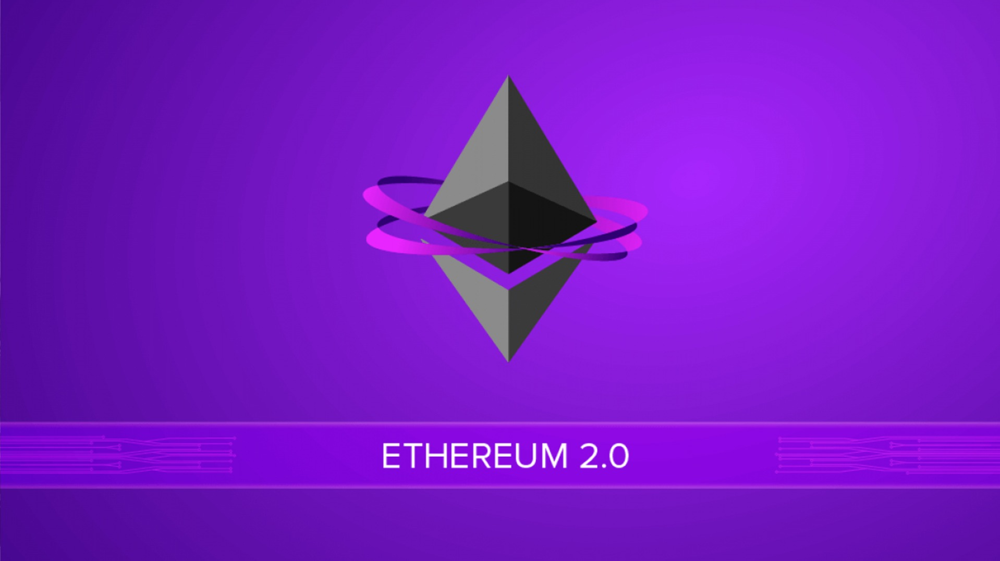

The Dynamics of Ether and its Role in Blockchain Innovation.
Ether, also known as Ethereum, ranks as the second-largest virtual currency by market capitalization, making it one of the most sought-after digital currencies among miners (the creators of cryptocurrencies). Ethereum operates as an open-source blockchain platform that relies on its native currency, called ether or ETH. Although these terms are often used interchangeably, they represent distinct entities. Ether serves as a token specifically used within the Ethereum blockchain
to facilitate transactions. This token is pivotal in driving nearly all activities within the network, which is open for anyone to utilize for creating and executing smart contracts. Smart contracts are self-executing software programs that operate autonomously without user intervention. According to data from Binance, the Ethereum digital currency currently boasts 120.10 million units in circulation.
Ethereum 2.0: The Era of "The Merge" and Proof of Stake.
After several months of delay and the fear that it might never happen, Ethereum finally carried out its long-awaited merge or upgrade to the new level 2.0 on September 15, 2022, promising to enhance the user experience of this cryptocurrency. "The Merge," as it's called in English, is a transformation in how Ethereum processes transactions and creates new Ether tokens.
This merge involves combining the Ethereum blockchain with a new separate blockchain known as proof-of-stake, which purportedly reduces Ethereum blockchain's energy consumption by 99.9%, according to its own developers, making it more environmentally friendly while potentially reducing transaction costs. Advocates believe the merge will favor Ethereum over its main rival, Bitcoin, as it could increase its utility.In the Proof Stake process, Ether owners will lock specified amounts of their cryptocurrencies to verify new records on the blockchain, earning new coins in addition to their staked cryptocurrency.